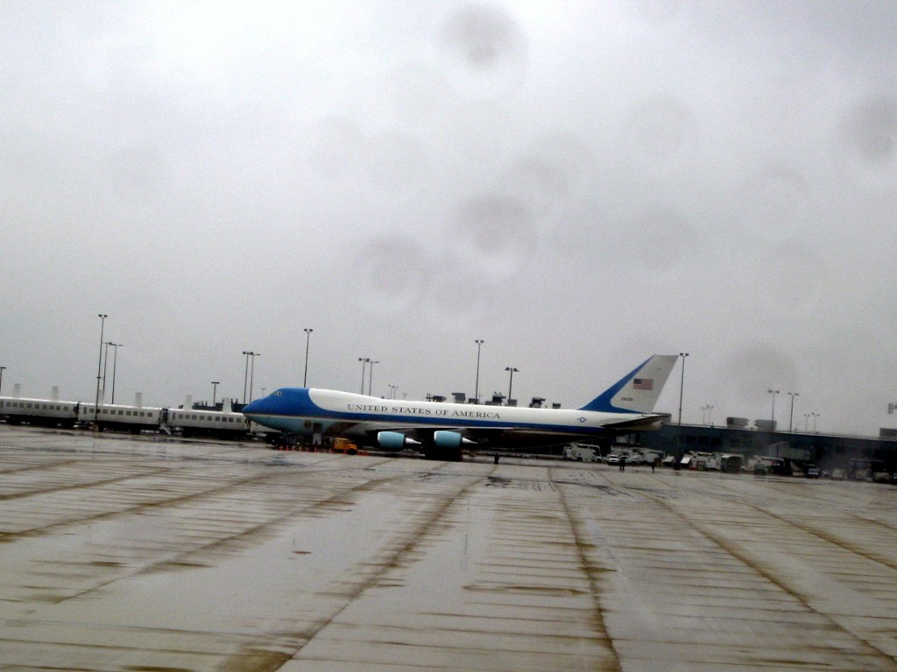
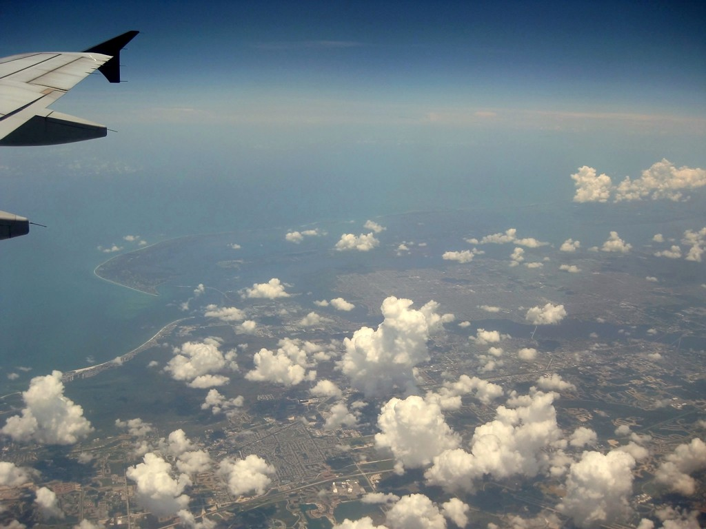
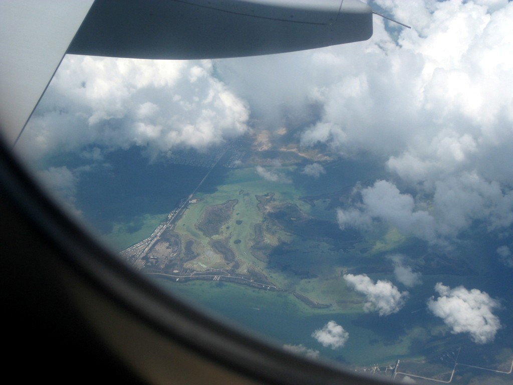
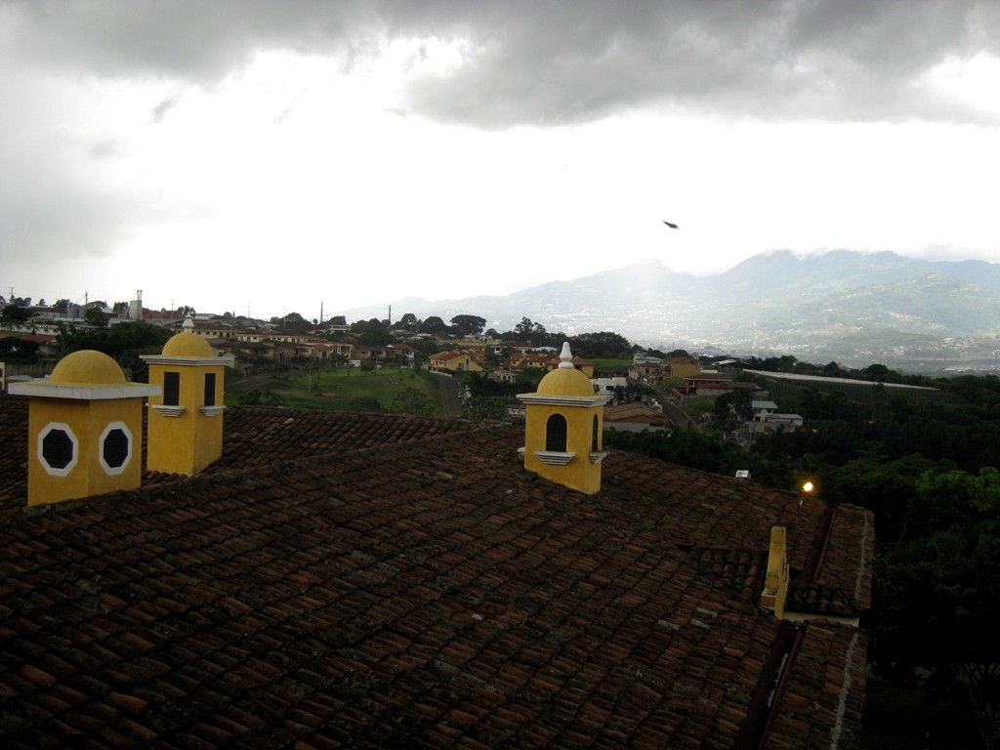
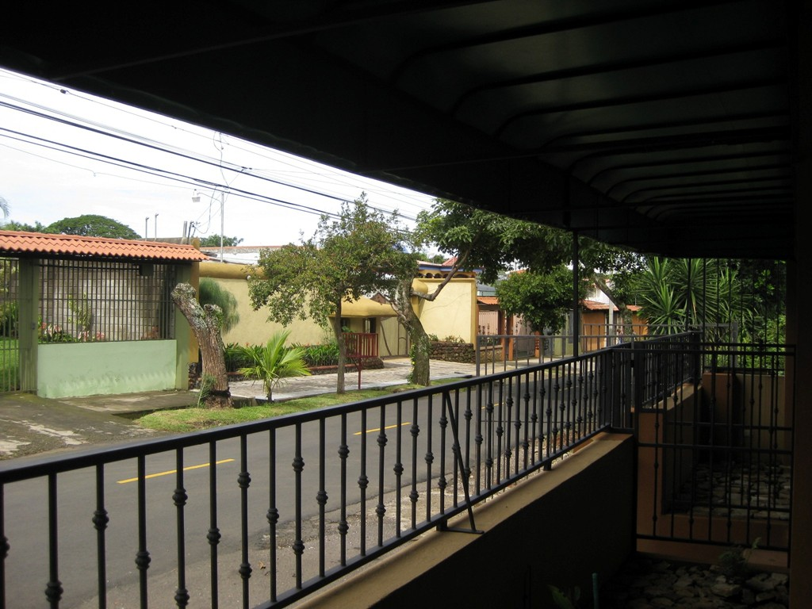
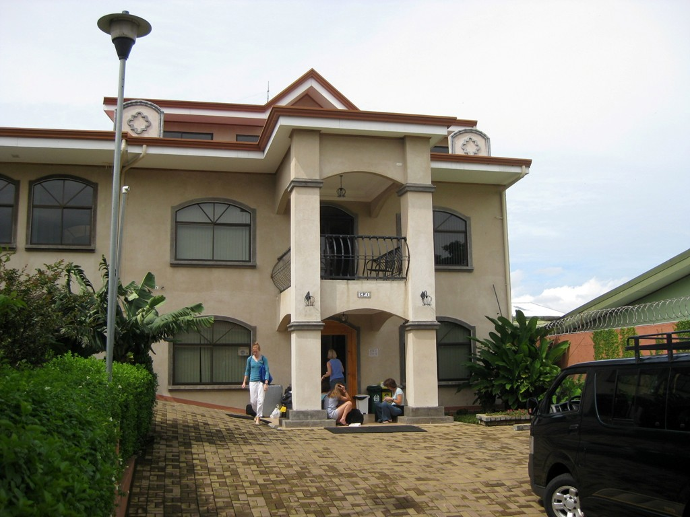
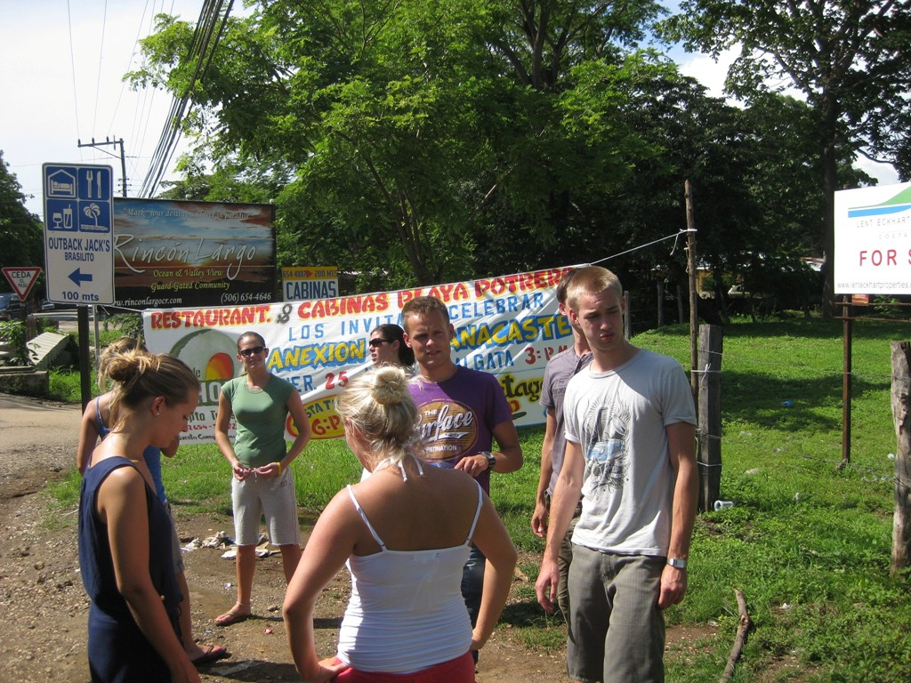
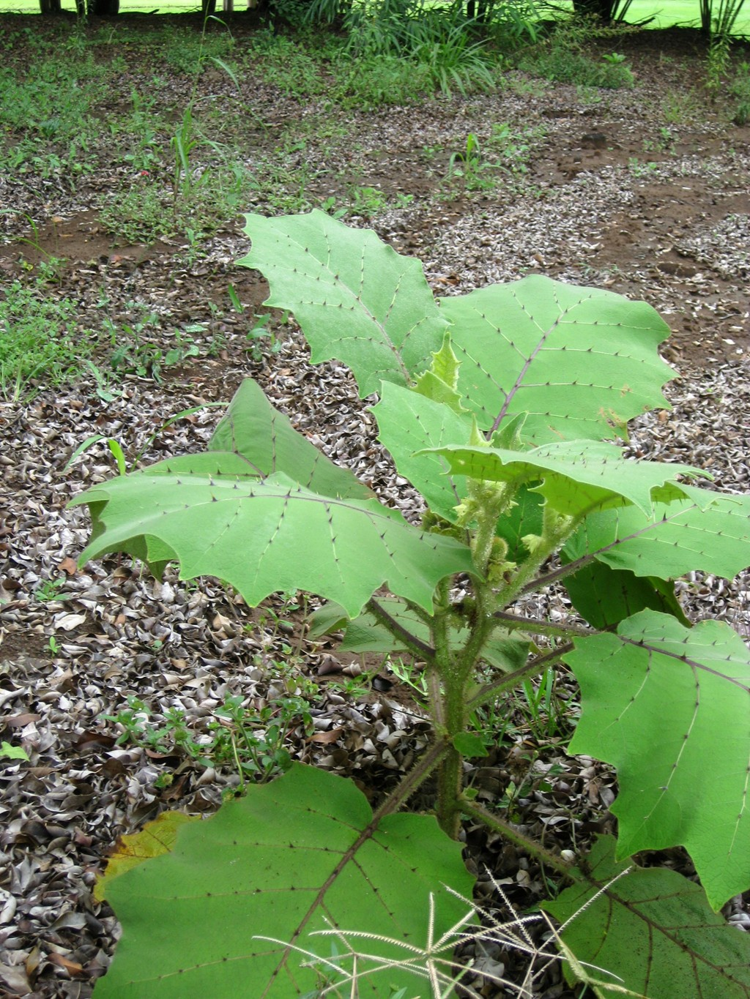

Dulles to Playa Flamingo
I put together the perfect vacation: Spanish school in the morning, scuba school in the afternoon! (My inner child is Hermione). Spanish school because I'm going to Argentina to visit a friend from grad school in the Fall, and hopefully Bolivia next year. At first, I was thinking Mexico, but when I saw Costa Rica on the web, I thought, why not? As a package deal, I could get two weeks of Spanish school, get my open water cert, and get lodging for $1,600. Teriffic deal--and not representative of prices in Costa Rica, which are now generally on a par with the US. (Bet the salaries aren't.)
 |
 |
Dictator Lite's plane parked at Dulles |
Last stop in the US. Homestead area of Florida. The Keys are visible trailing off to the right. |
Costa Rica's history is unique in Latin America. Following Columbus's arrival in 1502, the Spanish took the gold, killed the natives, and instituted slavery. So far, so good. But then Costa Rica dropped off their map. It was considered a remote Southern appendix to Guatemala, and ignored. The country got its independence on October 13, 1831--by mail. (Adios amigos, you're on your own).
Centuries of Spanish imperial neglect left Costa Rica without a dictatorial exploitive government, class warfare, or a strong army. It followed a bumpy path to become a functioning democracy. The army was abolished in 1949 (Pres. Figueres commented that you call a doctor when you're sick, but don't invite him to move in.) In 1982, Pres. Arias put Costa Rica on the map by winning the Nobel peace prize for setting a conflict between Guatemala and Honduras.
So today, nobody's fighting and nobody's starving. The infant mortality rate is on par with the US. The clouds on the horizon are drugs (it's on the trade route from Columbia) and a growing income inequality. But there's not the usual Latin American elite owning everything and contemptuous of the poor. Everyone is simply Tico (Costa Rican). They love to give each other rough nicknames like Chino, Pinche (cheap--but in LA it doesn't mean money, it's contemputous and dismissive and can be fighting words), Negro, Gordo (fatty) and so on. (The poor Eastern coast was settled by Jamaicans who speak an impenetrable patois of Caribbean English and Spanish. The Jamaicans built the very servicable infrastruture, like the Chinese in the US, and never got paid.)
 |
 |
| I'd hoped to get a shot of Cuba (Dictator Medium). Honestly, I don't know which island this was. | Stayed overnight at an airport hotel outside the capitol, San Jose. This is the view from my room. The capitol is actually the least interesting place in the country, I found. The only thing there is the National Theater, which the sugar barons build early last century when a popular diva wouldn't come to Costa Rica because there was no concert hall (in the end, she never came). Then there are a lot of no-go zones. it's the only really dangerous part of the country, as far as I know. |
The immigration lady asked "Firs' time?" with cold suspicion. I found out later that you can get another 90 day tourist visa after being out of the country for 72 hours, and immigration is getting tired of people taking up residence by gaming the system. But it's perfectly legal, so all they can do his harrass you at the border.
I couldn't believe how friendly everyone else was--strangers all say hola to tourists. And how safe everywhere is, even at night, outside San Jose. The restaraunts are mostly Italian and Peruvian. Fortunately, I was able to get comidas tipicas for lunch at school. After the hotel advised me not to go into San Jose at night, I took a taxi to a Peruvian restaraunt in a suburb and had my first glass of chica (a corn drink, not fermented as I had believed). The hotel guy said the taxi ride was 15 min--it was about 30. I'd just read about Bolivian taxi muggings in La Paz, so I had to wonder, especially when we headed out into the country. But the neighborhood we ended up in implied a pretty upscale mugging.
 |
 |
| Took a taxi to Heredia, a middle class suburb. The directions were alarming, "San Juan de Flores, 150m este del cemetario". Turns out that San Jose never got around to numbering its buildings. All the addresses are like that. | At the CPI Heredia campus, caught a minivan to Playa Flamingo. |
Next morning I did the long numbing bus ride to the West coast and the Centro Panamericano de Idomas at Playa Flamingo. Saw a lot of latte farming--sugar cane, coffee, cows. There were also a lot of speed traps--needed, as exemplified by the 18 wheeler turned upside down in a drainage ditch. Also saw unsecured loads piled three times the height of the pickup. The trip out made the major industry seem to be repuestos--salvage yards.
 |
 |
The ladies demanded a bathroom break in the party town of Brasilito. Most of the other students were recent graduates (the guys were from Sweden, two of the ladies from Austria) who were there for 6 weeks. |
I'd been keeping an eye out for this plant. It's one of many that have a symbiotic relationship with ants. It feeds the ants sticky sweet stuff. They rush to defend it, and garden the area around it to keep out competing plants. |
| Back |